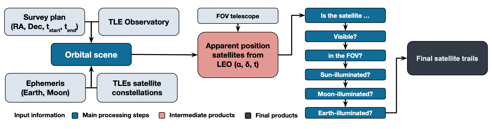
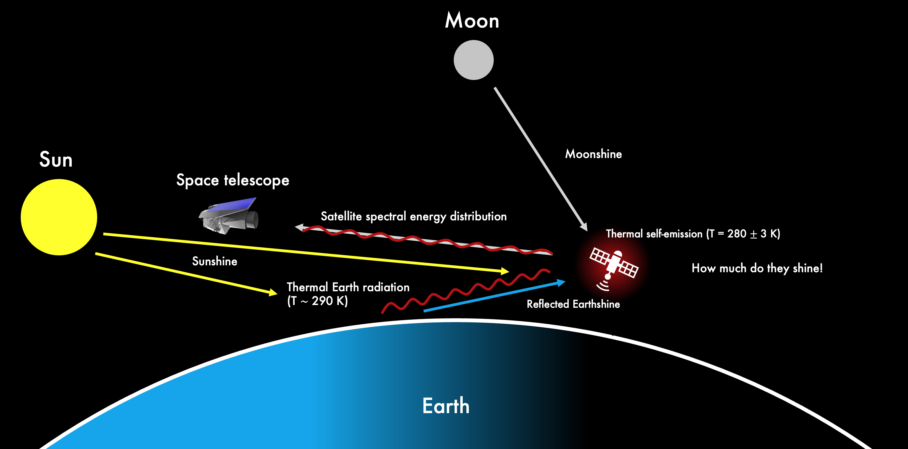
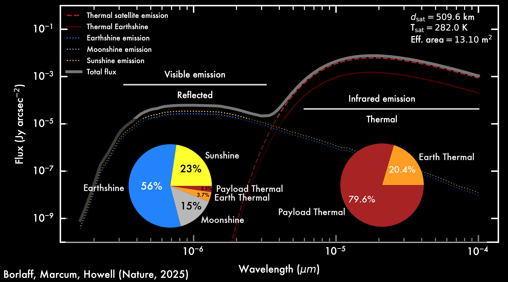

Methodology
The methodology to simulate realistic satellite trails in space telescopes is described in our original publication in Nature (Borlaff, Marcum, Howell 2025). However, we are continuously improving the models and simulations, and we will be including more details about the latest updates in the near future. In this section we provide a brief overview of the main constraints and assumptions of the simulations, as well as a description of the modeling approach and the algorithms used to detect satellite trails in the simulated images.
Space telescope orbit and attitude simulation
{kind=link}

Figure 1: Satellite trail simulation methodology flowchart. Left to right: 1) Orbital scene, based on the survey plan, Earth and Moon ephemeris, telescope (observer) and artificial satellite orbits. 2) Estimated sky position of the satellites along the simulated exposure. 3) Filtering satellite trails that cross the field of view, and are illuminated by the Sun, the Moon, or Earth. 4) Final record of satellite trail contamination on each exposure.
The satellite trail simulation process is schematized in Fig. 1. For each observatory, we assumed a survey plan that consisted of a series of pointings (right ascension and declination) taking place at an associated epoch (epoch at exposure start (\(t_{\rm{start}}\)) and exposure end (\(t_{\rm{end}}\)) with a certain exposure time (\(t_{\rm{exp}} = t_{\rm{end}} - t_{\rm{start}}\)). The available regions on the sky depend on the telescope orbit (as defined by the two-line element) and epoch (that is, a telescope cannot observe a region blocked by Earth), as well as specific survey constraints (Sun avoidance, Earth limb and maximum zenith angles) for each telescope, as summarized below. For Hubble simulations, we randomly selected archival exposures (right ascension, declination, \(t_{\rm{start}}\) and \(t_{\rm{exp}}\)) obtained with the wide-field channel of the Advanced Camera for Surveys during 2023–2024, assuming the closest orbit on time from its recorded history. The typical exposure time was \({t}_{\exp }={540}_{-200}^{+530}\,{\rm{s}}\).
To simulate the survey plan, orbital position and attitude of the SPHEREx, Xuntian and ARRAKIHS space telescopes, we chose random locations in the sky that were accessible with the adopted constraints of each telescope. For SPHEREx, we assumed a maximum zenital angle of 35°, a solar avoidance angle of 91° throughout the exposure and an exposure time of 112.5 s on \(h = 650\) km terminator-aligned Sun-synchronous orbit. Similarly, we chose \(h = 800\) km terminator-aligned Sun-synchronous orbit for ARRAKIHS, with a fixed exposure time of 600 s (ref. 22) and 55.7° Earth-limb angle.
Note
In the first version of the original manuscript, we assumed an Earth-limb angle of 7.6° for ARRAKIHS, similar to Hubble Space Telescope. However, ARRAKIHS is planned to observe at orientations closer to the zenith, with an Earth limb avoidance angle closer to 55.7°. Since it is more likely to find satellites at angles closer to the Earth limb, this angle makes ARRAKIHS much better shielded against the contamination of lower satellites, decreasing the trail rate per typical exposure under the same satellite population than previously predicted (see below). We have upgraded the values with the corrected 55.7° Earth limb angle value, (April 2026) and we published them in this manuscript author correction. The original predictions for Hubble Space Telescope, SPHEREx, and Xuntian are not affected by this change.
Finally, Xuntian was assigned the same orbit as the Tiangong Space Station (LEO; \(h = 450\) km; inclination \(i = 41.47°\)), a 55° solar avoidance angle, 7.6° Earth-limb angle during the whole exposure and a random exposure time following the same distribution as the Hubble observational record, on the basis of their similar available time-per-orbit, altitude, aperture and spatial resolution.
Satellite constellation orbit


The orbital parameters for the satellite constellations are generated using Planet4589 public database, which provides data on the orbital altitude, number of shells, number of orbital planes and satellites per plane for each FCC/ITU-registered satellite constellation. Several upgrades have been included in the latest version of the models:
Satellite debris with available cross-sectional area estimations (Planet4589 Satellite filtering list) are now included in the models. We select the main bus diameter times span of longest appendage as the maximum cross-sectional area of the satellite in face-on orientation (AREA 2). Catalogued objects (Space-track) with a) sizes smaller than \(<1 mm^2\), b) not orbiting Earth, and c) flagged as DOWN (de-orbited), are removed from the simulation.
Satellites with known dimensions (i.e., SpaceX Starlink Gen 1, 2, and xAI orbital data centers) have now a fixed area in the simulations. Those satellites for which their dimensions are unknown retain the original size distribution assumed in the original paper (1 – 125 \(m^2`\)).
The models include the latest FCC/ITU announcements (March 2026) from CTC1 and CTC2 (96,714 satellites each), and the SpaceX Orbital Data Centers (SXODC, 1,000,000 satellites). The total number of satellites considered (included existing debris, dead, and active satellites, and proposed constellations) adds up to 1,843,084. (Planet4589 :Satellite Constellation list).
Satellite trail brightness
The surface brightness of satellite trails depends on several factors, including the (1) brightness of the light source; (2) bidirectional reflectance distribution function [Greynolds et al. 2015] of the satellite and its distance to the observer; and (3) orientation of the reflecting surfaces to the light source (Fankhauser, F., Tyson, J. A. & Askari 2023). For order-of-magnitude estimations, we implemented some simplifying assumptions.
{kind=link}

A satellite located at a distance dsat (in metres) from a space telescope with a mirror diameter \(D_{\rm{mir}}\) crossing the FOV leaves a trail with a width \(\theta_{\rm{sat}}\) (in steradians) (Bassa et al. 2022 , Bektešević et al. 2018):
where σ represents the optical resolution of the telescope, and Dsat is the equivalent diameter (defined as the diameter of a circle with the same area) of the cross-sectional area of a satellite, assuming a random orientation with respect to the observer. The area of the extended solar panels in new-generation satellites can range from 1 \(m^2`\) to \(125 m^2\) (Mallama et al. 2017). In this study, we assumed a uniform distribution between these two extreme values.
The reflected spectral flux density (\(F_{R,{\rm sat}\to{\rm obs}}\); in \(W m^{−2} Hz^{−1}\)) of a LEO satellite with cross-sectional area Asat simulated as a Lambertian diffuse sphere can be approximated as a combination of the reflected light from the Sun (\(F_{\odot\to{\rm sat}}\)), the Earthshine (\(F_{\oplus\to{\rm sat}}\)), and the Moonshine (\(F_{\rm{Moon}\to{\rm sat}}\)) (Vallerie 1963) as
where p is the albedo of the satellite, and \(\gamma\) depends on the satellite illumination phase angle (\(\phi\)) from each source (Sun, Moon and Earth) as
In addition, satellites emit thermal black-body radiation (\(F_{\rm{T,sat \to obs}}\)):
where ϵ = 0.9 is the thermal emissivity (Lebofsky et al. 1986) that reflects a fraction of thermal radiation from Earth (FT,⊕→sat→obs) as well (Vallerie 1963, Horiuchi et al. 2020):
The total optical and infrared emission from a satellite (\(F_{\rm{sat}}\); in \(\rm{W m^{−2} Hz^{−1}}\)) received by an observer would then be:
Because the satellites move across the FOV, their flux is deposited on the detector along the trail. The surface brightness (\(\Sigma_{\rm sat}\); in \(\rm{W m^{−2} Hz^{−1} arcsec^{−2}}\)) can be modelled as (Ragazzoni 2020):
where is the observed angular area of the satellite image, texp is the exposure time (in seconds) and
is the effective time that a satellite that moves in the focal plane with an apparent angular velocity ωsat (\(\rm{arcsec s^{−1}}\)) takes to cross its own trail width (θsat). Finally, the surface brightness magnitude of the satellite trail µsat (in \(\rm{mag arcsec^{−2}}\)) will be:
Following a previous study45, we assumed \(T_{\oplus}= 290\) K for the temperature of Earth and a surface temperature \(T_{\rm{sat}}= 280\pm3\) K for satellites. Ground-based measurements estimated that the optical and near-infrared albedoes can vary between 0.1 and 0.5 for LEO satellites (Horiuchi et al. 2023, Tyson et al. 2024), even higher (\(p ≈ 1\)) for small pieces of debris. For the purpose of this study, we assumed a uniform distribution for \(p\) in the range [0.1–0.5].
{kind=link}

The V-band surface brightness magnitude of Sun-illuminated Earth is \(\mu_{V}≈ 2\,\rm{mag arcsec^{−2}}\), whereas the magnitude of the full Moon is \(m_{V}≈ −12.74\). To estimate the Earthshine (\(F_{\oplus\to{\rm sat}}\)) and Moonshine (\(F_{\rm Moon \to \rm sat}\)), we first scaled the solar spectral energy distribution (Willmer et al. 2018) in the V-band to the observer magnitude from Jet Propulsion Laboratory Horizons in the same band. We then integrated their spectral surface brightness by the visible illuminated area (in square degrees) for each satellite’s point of view. For the Moon, the illuminated area is defined by its phase at the epoch of the simulated exposure, whereas for Earthshine, only the areas inside the visible horizon can illuminate the satellite. Extended Data Fig. 6 represents two examples of the resulting contribution of each component to the total observed spectral energy distribution of the satellites.